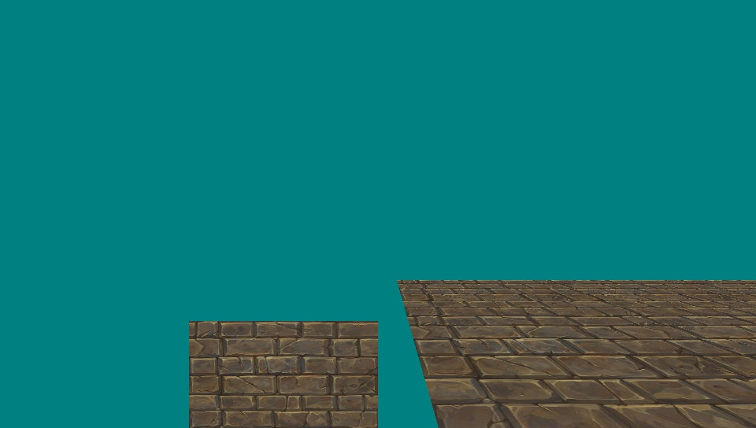

Starting to combine my code for different platforms into a single library. For now simply called GameLib. TBD a cooler, better sounding name :). Originally this repo had PS2 and PSX code, now I'm redoing it as I have more experience and worked with other platforms. Plus, multiplatform support including PSX is hard because of the PSX needing to do everything in fixed-point.
The code is here: https://bitbucket.org/williamblair/workspace/projects/GAM, where the GameLib repo contains the library code, and iqmanimpc for now is the test applicaton. Also uses my GameMath library as a submodule for GameLib: https://bitbucket.org/williamblair/gamemath/src/master/
Base PC and Wii implementations working together. Includes a third-person controlled animated IQM model and tiled floor:

The PC implementation uses Visual Studio 2019 for Windows. The libraries used are SDL2 and GLEW, so it *should* work on Linux as well. Still need to make a Makefile for linux. For windows, compile.bat is used with the VS developer command prompt to call cl.exe with the required args. A preprocessor define PC_BUILD is used by GameMath and some initialization/file loading.
The wii implementation uses Makefile.wii with devkitpro. The main difference between the Wii and PC implemenations currently is texture loading on the wii uses textures baked into the code, so the loading functions are different. TODO is figure out how to load textures for wii from a file. The preprocessor define WII_BUILD is used in this case. The differences between main.cpp for the PC and Wii are:
#ifdef PC_BUILD
using namespace GameLib::PC;
#undef main
#endif
#ifdef WII_BUILD
// IQM texture
#include "Gina.h"
#include "Gina_tpl.h"
// Ground texture
#include "grass.h"
#include "grass_tpl.h"
using namespace GameLib::Wii;
#endif
...
#ifdef PC_BUILD
if (!gRender.Init(800, 600, "Hello World")) { return 1; }
if (!gInput.Init()) { return 1; }
if (!gGrassTex.LoadFromTGA("assets/grass.tga")) { return 1; }
if (!gIqm.Init("assets/gina.iqm")) { return 1; }
if (!gIqmTex.LoadFromTGA("assets/gina.tga")) { return 1; }
#endif
#ifdef WII_BUILD
if (!gRender.Init(640, 480, "Hello World")) { return 1; }
if (!gInput.Init()) { return 1; }
if (!gGrassTex.Init(grass_tpl, grass_tpl_size, grass)) { return 1; }
if (!gIqm.Init("sd:/gina.iqm")) { return 1; }
if (!gIqmTex.Init(Gina_tpl, Gina_tpl_size, gina)) { return 1; }
#endif
TODO is to retest on Wii hardware to make sure it still works. Up next is the PS3 base implementation. Hopefully after that PS2 support as well (maybe...)
Started PS3 implementation. Confirmed a simple triangle drawing works. Basically all there, except there's still a camera issue between tiny3d using +z=forwards 0..65535 and GameMath using +z=backwards. I think the main issue currently is the tiny3d vertex shader:
v = mul(inputvertex.vertex, WorldMatrix);
outputvertex.vertex = mul(v,ProjMatrix);
outputvertex.vertex.z *= outputvertex.vertex.w;
This last line (z*w) I believe is causing the GameMath matrix implementations to be incompatible. I've been trying to figure out if I can remove that line and recompile ther vertex shader for tiny3d. It seems to be baked into the code via the vpcomp utility, which is no longer used by PSL1GHT and has been replaced by cgcomp. Cgcomp seems to output a different format than vpcomp. I was able to compile vpcomp from an older commit of PSL1GHT, but it gives errors when trying to compile the vertex shader. The first error was "pow" being an unsupported function

After commenting out the line that uses pow, a error related to a register is given:
I'm guessing maybe the version of nvidia-cg-toolkit (libCg) is newer now compared to ~2011 and is causing the issue? However older versions from the nvidia website are unavailable (only 3.31 is available). The only other thing I can try maybe is modifying the tiny3d source code to account for the z*w vertex shader line when sending vertices/matrices to the shader. Otherwise I might try just using PSL1GHT again without tiny3d and make the code more similar to how tiny3d works (allocating a single block of RSX memory for vertices)
Switched from tiny3d to plain PSL1GHT ps3 impl. Had two issues: one, there seems to be a bug somewhere in the ps3 implementation of GameMath, as switching from the ps3 impl to the plain c++ impl fixed incorrect rendering initially. I haven't looked into the issue yet. I thought I had ran into this and already fixed it earlier, but maybe not.
The second was that some vertices would freak out and render incorrectly on my actual PS3 hardware but not on rpcs3. I've seen this happen before on my previous PS3/PSL1GHT programs so I wasn't super surprised that it happened. After playing around with different options related to vertex clipping in the renderer code, the following seem to have fixed the issue/render correctly without freakouts:
// don't call this function:
//rsxSetZMinMaxControl(context, 0, 1, 1);
// do call this function:
for (i=0; i<8; i++) {
rsxSetViewportClip(context, i, display_width, display_height);
}
// don't call this function:
//rsxSetUserClipPlaneControl(context,GCM_USER_CLIP_PLANE_DISABLE,GCM_USER_CLIP_PLANE_DISABLE,...)
Which were functions I saw used in different examples code. Also, as a side note, I was able to use OpenGL-style glsl shaders following this post by user Crystal: link. The glsl and regular PSL1GHT equivalent versions of the shader I'm using so far are:
//glsl vertex/fragment shader
#version 130
in vec3 aPos;
in vec3 aColor;
out vec4 fragColor;
uniform mat4 uMvpMatrix;
void main(void)
{
gl_Position = uMvpMatrix * vec4(aPos, 1.0);
fragColor = vec4(aColor, 1.0);
}
---
#version 130
out vec4 FragColor;
in vec4 fragColor;
void main(void)
{
FragColor = fragColor;
}
// PSL1GHT version (hlsl/directX? not sure)
void main
(
float3 aPos : POSITION,
float3 aColor : COLOR,
uniform float4x4 uMvpMatrix,
out float4 ePosition : POSITION,
out float3 oColor : COLOR
)
{
float4 v;
v = mul(float4(aPos, 1.0f), uMvpMatrix);
ePosition = v;
oColor = aColor;
}
---
void main
(
float3 color : COLOR,
out float4 oColor
)
{
float4 testColor = float4(color, 1.0);
oColor = testColor;
}
Currently the PSL1GHT version is used and is what I tested on my actual PS3. Below shows before fixing the vertex freakout issue and after. Next TODO for PS3 is to add back in textures and IQM model support.
Got PS3 iqm anim working and re-verified Wii working on hardware. Also made some changes on the Wii implementation to get the hello world simple triangle drawing working. The issue for Wii was the Renderer::Clear() call was setting up to use a texture, which the simple triangle drawing wasn't using.
For the rest of the ps3 impl for iqm animation, I found again there's an issue with the PS3 GameMath impl. When using the PS3 impl, the IQM model wasn't shown onscreen, but the tile floor rendered fine/as expected. That makes me think there's something wrong with the Quaternion ps3 impl, as the tile floor doesn't use them. For now though, switching it to use the plain cpp implementation of GameMath works fine.
The shader I added for textured rendering on ps3 looks like:
void main
(
float3 aPos : POSITION,
float2 aTexCoord : TEXCOORD0,
uniform float4x4 uMvpMatrix,
out float4 ePosition : POSITION,
out float2 oTexCoord : TEXCOORD0
)
{
float4 v;
v = mul(float4(aPos, 1.0f), uMvpMatrix);
ePosition = v;
oTexCoord = aTexCoord;
}
---
void main
(
float2 texCoord : TEXCOORD0,
uniform sampler2D uTexture,
out float4 oColor
)
{
float4 testColor = tex2D(uTexture, texCoord);
oColor = testColor;
}Yesterday I got the pspdev environment set up, so I can try and create a PSP implementation as well. There seems to be a larger/more active PSP community based on my brief searching and the toolchain seems to be very modern/actively maintained. The example I tried yesterday uses CMake and the compiler for pspdev is gcc 11.2, which is the latest I think. Because of this I'm (knock on wood) guessing the PSP implementation should be fairly straightforward.
Started the psp implementation; added enough to get the gamelibhellworld triangle drawing and camera movement working. Most of the information/psp code came from https://web.archive.org/web/20090124081552/http://ghoti.nl/PSPtutorials.php and the corresponding code at https://github.com/PSP-Archive/3D-PSP-Tutorials . Graphics using pspsdk kind of seems to be a hybrid between old/fixed function and modern OpenGL. There aren't shaders (that I've seen), but you don't call a function to specify each vertex point; all vertices are drawn in a single call. The matrix system is like older OpenGL though with an internal matrix stack. Luckily, the matrix format directly matches the GameMath cpp implementation. We can directly feed psp sdk our GameMath matrices via:
// set projection matrix
sceGumMatrixMode(GU_PROJECTION);
sceGumLoadIdentity();
sceGumLoadMatrix((const ScePspFMatrix4*)&mProjMat.r0c0);
// set view matrix
sceGumMatrixMode(GU_VIEW);
sceGumLoadMatrix((const ScePspFMatrix4*)&viewMat.r0c0);
// set model matrix
sceGumMatrixMode(GU_MODEL);
sceGumLoadMatrix((const ScePspFMatrix4*)&modelMat.r0c0);
The direct cast works as both structures are 16 floats in column major order. One difference I noticed is the Sce matrices are 16byte aligned.
Another interesting difference for the psp implementation is the required format and order of vertex attributes. In modern OpenGL you specify each attribute of the vertex buffer/array. For pspsdk, there is a fixed combinations of formats and order of attributesyou can use. From the pspsdk doxygen documenation here, the required order (if included) is:
[vertices(1-8)] [weights (0-8)] [texture uv] [color] [normal] [vertex]
So each attribute isn't required in the vertices, if an attribute is included, it must be in this order in the data you send it. You specify which attributes are included as an argument to sceGuDrawArray(). For just having color and position attributes, the draw call looks like:
sceGumDrawArray(
GU_TRIANGLES,
GU_COLOR_8888 | GU_VERTEX_32BITF | GU_TRANSFORM_3D,
vb.mNumVertices,
0,
vb.mPosColorVertices
);
Where vb.mPosColorVertices is an array internally stored in my VertexBuffer class where each element has the following format:
struct PosColorVertex {
unsigned char r, g, b, a;
float x, y, z;
};
Upon VertexBuffer initialization, the input vertices are stored in mPosColorVertices in this format, as the input vertices are x,y,z, r,g,b and need to be converted.
I haven't tried running the code on hardware yet - just on PPSSPP. I dusted off my PSP yesterday and confirmed it turns on, but the battery seems to be shot and it's not recognizing the memory stick. I ordered a new battery and memory stick which should get here sometime next week probably. Then I'll have to go through the "jailbreaking" process again, which I don't remember how to do...
PSP iqm anim impl working (again, at least in PPSSPP). Got the new PSP battery in today but still waiting on the memory stick. I disabled culling because it seems the triangle order for the IQM is backwards, causing the front to be culled instead of the back:

Also, a TODO is use indexed rendering. I've been putting it off because it seems that pspsdk only supports 8 and 16bit indices; for all other implementations so far I've been using 32bit. Not sure if restricting the size to 16bits would cause an issue yet or not. To get around it, I've been having the VertexBuffer class upon initialization/ vertices update to convert from indexed to non-indexed vertices.
I ran into an issue where it seems the constructor for the ThirdPersonPlayer class wasn't being ran properly; I had to manually set the default settings in main() instead:
gPlayer.SetModel(&gIqm);
gPlayer.SetModelScale(GameMath::Vec3(0.1f, 0.1f, 0.1f));
gPlayer.SetTexture(&gIqmTex);
gPlayer.GetCamera().SetDistance(15.0f);
gPlayer.SetDrawYawOffset(180.0f);
gPlayer.SetDrawPitchOffset(-90.0f);
gPlayer.Update(0.0f);
For the curren tresult, triangles near the edge of the view frustum seem to be getting cut off prematurely; I think this is mentioned in the above Ghoti tutorials to addressed later on.
The sd card and adapater I ordered came in today, so I was able to test the psp impl on actual hardware! To get custom firmware on the PSP, followed this video: link. And it works :)
Also added a Sprite class for 2D sprite support (see the rectangle in the psp video above). Tested working on all systems (pc/ps3/wii/psp). Planning on working on texture-based fonts next then music and sound effects.
Started texture-based font support; added PC and psp implementations. Uses a sprite with different UV coordinates for each character. Currently only uppercase letters are supported (although getting lowercase to work should be really easy). Had an interesting bug with the PSP and PS3 implementations at first. For the PC version, which I based the psp version off of, the renderer has a single vertex buffer to draw sprites with, composed of two triangles. Each sprite shares this vertex buffer. For the PSP implementation, this caused previously drawn sprites within the same frame to be overwritten/drawn over by the latest drawn one. It seems that calls to sceGumDrawArray do not copy the vertex data, and instead store the pointer you give it. Thus multiple calls pointing to the same data, if that data is updated before the actual drawing occurs, will conflict with each other. To get around this, instead of having a single vertex buffer for sprite drawing, there is an array of vertices, and a different index is used for each drawn sprite. Currently I set the max to 512 sprites, which means for texture-based font drawing, a max of 512 characters can be drawn per frame. I did basically the same thing for PS3 as well.
VertexBuffer::PosTexVertex* Renderer::sSpriteVertBufs = nullptr;
// InitSpriteVertBufs()
sSpriteVertBufs = (VertexBuffer::PosTexVertex*)memalign(
16,
SPRITE_NVERTICES*sizeof(VertexBuffer::PosTexVertex)
);
float vertices[5*6] = {
// position texcoord
0.0f, -1.0f, 0.0f, 0.0f, 0.0f, // bottom left
1.0f, -1.0f, 0.0f, 1.0f, 0.0f, // bottom right
1.0f, 0.0f, 0.0f, 1.0f, 1.0f, // top right
0.0f, -1.0f, 0.0f, 0.0f, 0.0f, // bottom left
1.0f, 0.0f, 0.0f, 1.0f, 1.0f, // top right
0.0f, 0.0f, 0.0f, 0.0f, 1.0f // top left
};
int i = 0;
while (i<SPRITE_NVERTICES) {
for (int j=0; j<6; ++j, ++i) {
VertexBuffer::PosTexVertex* ptv = &sSpriteVertBufs[i];
float* v = &vertices[j*5]; // 5 floats per input vertex
ptv->u = v[3];
ptv->v = v[4];
ptv->r = 255;
ptv->g = 255;
ptv->b = 255;
ptv->a = 255;
ptv->x = v[0];
ptv->y = v[1];
ptv->z = v[2];
}
}
//DrawSprite()
// Get the current vertices buffer for 2d sprite drawing
VertexBuffer::PosTexVertex* ptv = &sSpriteVertBufs[mCurSpriteVertBuf];
mCurSpriteVertBuf += 6; // 2 triangles
if (mCurSpriteVertBuf >= SPRITE_NVERTICES) {
dbgprint("ERROR - mCurSpriteVertBuf exceeded max for frame\n");
return;
}
// updated tex coords
float leftU = sprite.mU;
float rightU = leftU + sprite.mW;
float topV = 1.0f - sprite.mV;
float bottomV = 1.0f - (sprite.mV + sprite.mH);
ptv[0].u = leftU; ptv[0].v = bottomV; // bottom left
ptv[1].u = rightU; ptv[1].v = bottomV; // bottom right
ptv[2].u = rightU; ptv[2].v = topV; // top right
ptv[3].u = leftU; ptv[3].v = bottomV; // bottom left
ptv[4].u = rightU; ptv[4].v = topV; // top right
ptv[5].u = leftU; ptv[5].v = topV; // top left
sceGumDrawArray(
GU_TRIANGLES,
GU_TEXTURE_32BITF | GU_COLOR_8888 | GU_VERTEX_32BITF | GU_TRANSFORM_3D,
6, // 2 triangles
0,
ptv
);
Before having individual dedicated sprite-drawing vertices on psp,ps3:
After dedicated vertices:

Working on background music support (Music class). PC version working no problemo via SDL_mixer. Started PSP version and it's been more tricky. First I tried SDL_mixer for the PSP as well, but was getting linker related errors. Googling only really gave one result in Japanese: link
psp-fixup-imports ./IqmAnimPsp
Error, could not fixup imports, stubs out of order.
Ensure the SDK libraries are linked in last to correct this error
make: *** [Makefile:27: all] Error 1
So then I was looking into the psp sdk included mp3 example, but that wasn't working for me even in PPSSPP; specifically the function sceMp3Init was failing. Searching online seems to show others get this error as well: link and another link.
So far what I have working instead is a modified version of one of the audio wave-generation samples to stream a WAV format file instead. I got info on the WAV file format from here. The .WAV file needs to have a sample rate of 44100Hz, and be 16bit stereo. The nice part is it streams off of the memory stick so file size isn't as much of an issue. Basically I have a 2048 sample buffer that gets filled into from the .WAV file off of the memory stick every time the audio callback needs more samples:
typedef struct WAVStreamData {
int wavFd;
int fileSizeBytes; // size of the data portion of the WAV file
int fileBytesRemain; // remaining bytes of the file data portion
unsigned char* bufPtr; // pointer into below buffer
unsigned int bufSizeRemain; // end of buffer - bufPtr
unsigned char buffer[2048*4]; // save 2048 samples at once
} WAVStreamData;
WAVStreamData wavStream;
/* This function gets called by pspaudiolib every time the
audio buffer needs to be filled. The sample format is
16-bit, stereo. */
void audioCallback(void* buf, unsigned int length, void* userdata) {
char writeBuf[256];
if (!wavInitSuccess) {
return;
}
// length = number of samples = 32bits/4bytes (left, right channel)
int outBufBytes = length*4;
int numBytesRemain = outBufBytes;
unsigned char* outBuf = (unsigned char*)buf;
while (numBytesRemain > 0) {
// copy buffered samples into output
int amountBytesCopy =
(wavStream.bufSizeRemain >= numBytesRemain) ?
numBytesRemain :
wavStream.bufSizeRemain;
// assumes WAV file data is expected format, 16bit stereo, with
// matching sample rate
memcpy(outBuf, wavStream.bufPtr, amountBytesCopy);
outBuf += amountBytesCopy;
numBytesRemain -= amountBytesCopy;
wavStream.bufPtr += amountBytesCopy;
wavStream.bufSizeRemain -= amountBytesCopy;
// get more WAV file samples if buffer is empty
if (wavStream.bufSizeRemain == 0) {
wavStream.bufPtr = wavStream.buffer;
wavStream.bufSizeRemain = sizeof(wavStream.buffer);
int numFileReadRemain = sizeof(wavStream.buffer);
unsigned char* fileReadPtr = wavStream.buffer;
while (numFileReadRemain > 0) {
int numToRead =
(wavStream.fileBytesRemain >= numFileReadRemain) ?
numFileReadRemain :
wavStream.fileBytesRemain;
int numRead = sceIoRead(wavStream.wavFd, fileReadPtr, numToRead);
if (numRead <= 0) {
sprintf(writeBuf, "resetting wav file to data past header\n");
sceIoWrite(dbgFd, writeBuf, strlen(writeBuf));
// go back to beginning of WAV file past header
sceIoLseek32(wavStream.wavFd, sizeof(WAVHeader), PSP_SEEK_SET);
wavStream.fileBytesRemain = wavStream.fileSizeBytes;
// re-read
numRead = sceIoRead(wavStream.wavFd, fileReadPtr, numToRead);
}
fileReadPtr += numRead;
numFileReadRemain -= numRead;
wavStream.fileBytesRemain -= numRead;
// If we reached the end of the file...
if (wavStream.fileBytesRemain == 0) {
sprintf(writeBuf, "resetting wav file to data past header\n");
sceIoWrite(dbgFd, writeBuf, strlen(writeBuf));
// go back to beginning of WAV file past header
sceIoLseek32(wavStream.wavFd, sizeof(WAVHeader), PSP_SEEK_SET);
wavStream.fileBytesRemain = wavStream.fileSizeBytes;
}
}
}
}
}
The full code is here, so now I just need to adapt this code into a Music class for GameLib.
Finished PSP music implementation and Wii music implementation. The PSP version was just slightly reworked from the above code to work with a Music class, with audioCallback being a static function within Music, and then adding "this" as a user data parameter when you set the callback. TODO is support multiple channels, which will be necessary for sound effects.
void Music::Play(const bool loop)
{
mWavStream.looping = loop;
// TODO - different channels
pspAudioSetChannelCallback(
0, // channel
audioCallback,
(void*)this
);
}
void Music::audioCallback(void* buf, unsigned int length, void* userdata)
{
Music* mus = (Music*)userdata;
WAVHeader& wavHdr = mus->mWavHdr;
WAVStreamData& wavStream = mus->mWavStream;
if (mus->mPaused || (wavStream.ended && !wavStream.looping)) {
return;
}
...
The Wii implementation requires an OGG file which I already had working previously, just added the ability to load the file off of the sd card first instead of reading it from a buffer.
Added basic PS3 Music impl for WAV files. Based off of the PSP impl except the sample rate seems to be 48000 (based off of SDL PSL1GHT port), the sample format is 32bit floats with range -1..1, and there is no given callback function. Instead, I figured out how to do PPU threads using PSL1GHT, and have a Music thread which updates the PS3 sound sample buffer in the background, again streaming from a file like the PSP implementation. According to here the PPU has 2 cores/threads. I made a simple Thread wrapper class based off of the PSL1GHT sample, whose basic usage looks like:
void myThreadFcn(void* arg)
{
u64 myArg = (u64)arg;
u64 myThreadId = Thread::GetThreadId();
while (notDone)
{
doStuff();
if (notDoingAnything) {
Thread::Yield();
}
}
u64 retVal = 0;
Thread::Exit(retVal);
}
u64 myArg = 42;
GameLib::PS3::Thread myThread;
myThread.Start(myThreadFcn, (void*)myArg, "My Thread Name");
doStuff();
u64 threadRetVal;
myThread.Join(&threadRetVal);
GetThreadId, Yield, and Exit are static Thread class functions to be used internally by thread functions. For the ps3 Music class, the thread function reads raw samples from the WAV file, converts them to big endian, and then converts them from 16bit to floating point -1..1, and copies them into the PS3 sound buffer:
void Music::sThreadFcn(void* arg)
{
Music* mus = (Music*)arg;
WAVStreamData& wavStream = mus->mWavStream;
...
while (runThread)
{
if (wavStream.ended && !wavStream.looping) {
break;
}
if (mus->mPaused) {
Thread::Yield();
continue;
}
...
// get position of the block to write
// 2 = 2 channels (left, right)
float* buf = audioDataStart + (2*AUDIO_BLOCK_SAMPLES*audioBlockIndex);
// fill buffer
// samples are floating point with range -1..1
const float sampScale = 1.0f/32768.0f;
for (unsigned int i = 0; (i < AUDIO_BLOCK_SAMPLES) && runThread; ++i) {
const int16_t leftSamp = ((int16_t*)wavStream.bufPtr)[0];
const int16_t rightSamp = ((int16_t*)wavStream.bufPtr)[1];
buf[i*2 + 0] = ((float)lend2bend16(leftSamp)) * sampScale;
buf[i*2 + 1] = ((float)lend2bend16(rightSamp)) * sampScale;
...
Thread::Exit(0);
}
void Music::Play(bool loop)
{
...
mThread.Start(sThreadFcn, (void*)this, "Music Thread");
...
}
Added sound effect class implementation for PC and Psp. Also added linux Makefile to the iqmanimpc and gamelibhello world repositories. For the PC sound effect impl, the SDL2 mixer Mix_Chunk object is used. For the PSP impl, it works the same as the Music class except channel 1 is used instead of channel 0. When Play() is called, the file fd is reset back to the beginning of the wav data so each Play() call starts from the beginning. Also added a boolean value to attempt to act as a poor man's mutex between the Sound Effect class and the audio callback function so they don't interfere with each other. Seems to be working fine on hardware, so good enough for now.
Added sound effect impl for PS3. Like the music class, it creates a thread to stream the .wav file, and the thread exits when the file is out of data. What makes it different from the Music class is that you can call Play() again and the sound effect will tell the thread to terminate if it's already playing (by setting mRunning = false). The downside is that this means a new thread is created every time you call Play on a sound effect. Certainly not the most efficient (it'd be better to have a dedicated background thread), but I tested it on hardware and it works, so good enough for now. Just the Wii sound effect implementation remaining.
Added sound effect implementation and Thread class implementation for Wii. For sound effects, I modified the OGG player example to work with different Wii voice channels. In this case, only two channels are used - one for the Music class and one for the sound effect class. For threads, looking at lwp.h, which is the libogc thread interface, and the ogg player example were enough for me to figure out generally how to implement it. The lwp interface requires thread functions to return a void pointer, as opposed to void like the PS3 implementation. To get around this, I made a static wrapper function in the Thread class which returns void-star and simply calls the actual desired thread function, then returns null:
void* Thread::sThreadFcnWrapper(void* arg)
{
Thread* thr = (Thread*)arg;
thr->mFcn(thr->mArg);
return (void*)0;
}
During its development, I was (and still am) having an issue creating and writing a text file to the SD card for some reason. I could have sworn this worked in the past. For std::ofstream I don't seem to be getting an error, in that is_open() returns true after supposedly opening the file. TODO is to look into that. In order to test if my test thread was actually running, I made the thread play the test sound effect once every two seconds, and then play the sound effect again after the thread exits if the return code is what I was expecting. That seemed to work so I'm going to call it a success.
I think the next step is to start making more elaborate/complex demos using the library. I'm going to start with a 3D jrpg demo, like what I had done for Raylib. Some other TODOs now include documentation and adding OGG support to the PS3/PSP which only support WAV currently, and then add support for other image formats also.
Finished PSP thread impl and added BMP image support to PSP. Thread::Yield for psp doesn't do anything as I haven't found a yield equivalent based on my cursory scanning of the pspsdk doxygen. Also Thread::Exit doesn't save your return value because for some reason accessing the static map where I would save the return value results in a invalid memory access error.
BMP image support for PSP I was able to get working based on the Wikipedia entry for the file format, plus what I remember working on SDL 1.2 for the PS1. The only issue I had was I needed to make sure the header structs were packed; as this was causing the data to not be read in properly due to structure padding:
struct Header
{
uint16_t header; // the header field
uint32_t filesize; // size of the file in bytes
uint32_t reserved; // 4 bytes of reserved data (depending on the image that creates it)
uint32_t pixOffset; // 4 bytes offset (i.e. starting address) of where the pixmap can be found
} __attribute__((packed));
// Win32 struct (40 bytes)
struct BITMAPINFOHEADER
{
uint32_t size;
int32_t width;
int32_t height;
uint16_t planes;
uint16_t bitCount;
uint32_t compression;
uint32_t sizeImage;
int32_t xPelsPerMeter;
int32_t yPelsPerMeter;
uint32_t clrUsed;
uint32_t clrImportant;
} __attribute__((packed));
With a test image for a sprite and tile floor:
I've also started a RPG demo with GameLib but I haven't pushed it anywhere yet. So far it just uses a different IQM model, but at least that means different IQM models work :)
Added PC BMP image impl and SetBGColor. Had to distinguish between Visual Studio and GCC to indicate struct packing:
#ifdef _WIN32
#define PACKED
#pragma pack(push,1)
#else
#define PACKED __attribute__((packed))
#endif
struct Header
{
uint16_t header; // the header field
uint32_t filesize; // size of the file in bytes
uint32_t reserved; // 4 bytes of reserved data (depending on the image that creates it)
uint32_t pixOffset; // 4 bytes offset (i.e. starting address) of where the pixmap can be found
} PACKED;
// Win32 struct (40 bytes)
struct BITMAPINFOHEADER
{
uint32_t size;
int32_t width;
int32_t height;
uint16_t planes;
uint16_t bitCount;
uint32_t compression;
uint32_t sizeImage;
int32_t xPelsPerMeter;
int32_t yPelsPerMeter;
uint32_t clrUsed;
uint32_t clrImportant;
} PACKED;
#ifdef _WIN32
#pragma pack(pop)
#else
#undef PACKED
#endif
Also uploaded the current rpg test to bitbucket; it looks like so for now:
Added Md2 model support for PC. Based off of the latest PS2 implementation I had where animations are loaded and parsed upon init. Had to change to use GameMath but that was about the only issue I had. Md2 model from here.
Added Md2 psp impl. Encountered an issue with file loading off of a memory stick. When using PPSSP, this didn't cause an issue but on actual hardware it failed to load files. The issue was having an extra forward slash in file paths:
ms0://somefile.txt # doesn't work; fails to load ms0:/somefile.txt # works; loads properly
Also, the performance is starting to decrease noticeably on hardware. Probably should try and optimize the GameMath library impl. soon to use the PSP's vector math support.
I've began optimizing the psp GameMath impl. I'm able to use VFPU instructions in conjunction with the pspsdk gum library by using the same vfpu context, linked in libpspgum.a and libpspgum_vfpu.a: https://github.com/pspdev/pspsdk/tree/master/src/gum, then in GameMath/psp/GameMath.h:
// https://github.com/pspdev/pspsdk/blob/master/src/gum/pspgum_vfpu.c
extern struct pspvfpu_context* gum_vfpucontext;
namespace GameMath
{
...
inline Vec3 Normalize(const Vec3& v) {
...
pspvfpu_use_matrices(gum_vfpucontext, 0, VMAT0);
...
You also need to call gumInit() and call pspvfpu_use_matrices() before using any of the VFPU instructions, otherwise the PSP hardware crashes (although PPSSPP does not).
I've been using http://hitmen.c02.at/files/yapspd/psp_doc/frames.html as an instruction reference, however after looking at other code and https://forums.ps2dev.org/viewtopic.php?f=14&t=6929 , it seems to be incomplete/missing instructions; for example mtv. It does however nicely explain how the matrix/vector registers are used.
I've been testing for correctness in GameMath/test/psp/pspTest.cpp, but I haven't done any performance tests yet. But, so far so good; although I'll need to go back and improve some of the changes now that I know there are more instructions I can use.
Also, I found in PPSSPP you can get stdio to print to the console for printf if you enable logging to verbatim under settings, tools, developer tools, logging channels, enable all/log level.
Currently optimizing the PSP impl, including both GameLib and GameMath. The biggest difference was made by improving the normal matrix calculation in IqmMesh::Update to not calculate a full inverse/transpose for each joint. Also, the initial psp GameMath impl was slower than the plain cpp impl; the overhead of moving data in/out of vector registers was too high I suppose. I reduced the number of GameMath functions that actually use the vector registers down to a minimum of the obvious ones, like matrix-matrix multiplication.
In most cases I wrote inline assembly to use the vector/matrix registers, so I've gotten alot more comfortable with that in the process, so that was fun. For the renderer I changed it so that textures and the projection matrix are only updated once/when necessary as opposed for every sprite or vertex buffer draw. Also reenabled back face culling.
In order to calculate FPS and frame time (both are averages over 1 second periods) I updated the GameTimer class to include a GetAvgFps and GetAvgFrameTime function.
| Initial GameMath psp opt | 8 fps, Frame time 0.13 seconds |
| orig cpp GameMath impl | 9.4fps, Frame time ~0.11 seconds |
| TileFloor reduce and renderer optimizations, some psp GameMath vector ops | 11.45fps, Frame time 0.09 seconds |
| MoveComponent::Update opt | 11.89fps, Frame time 0.08 seconds |
| IqmMesh anim opt | 19.33fps, Frame time 0.05 seconds |
It's hard to make out in the picture but is says "FPS: 19.57" and "Frame Time: 0.05"
Added the game timer avg FPS and frame time to PC, PS3, and Wii impls. This was quite easy as all except the PC version use the same gettimeofday() function, so it was mostly copy-paste. The PC one uses SDL2 GetTicks() which is straightforward also.
Added PS3 Md2Mesh impl. I had gotten MD2 models working on PS3 previously so I remembered I needed to endian swap all of the file format fields since PS3 is big endian. Other than that it was a copy-paste from the PC impl.
I haven't tested on PS3 and Wii hardware yet, but in emulators it's showing 60FPS and ~0.02 seconds frame time. I (knock on wood!) don't think performance will be an issue for these platforms yet.
My next plan is to add indexed drawing support for PSP to try and speed up its performance some more.
Working on adding indexed drawing for PSP impl. It works on PPSSPP but is crashing on real hardware. The only reference I've found that uses indexed drawing is the shadow projection example. The only thing I can see that I'm doing differently is calling sceGumDrawArray instead of sceGuDrawArray, but I doubt that would make a difference. Also my indices are created with memalign(16,...) as opposed to a static array. I'm planning on getting psplink set up on my Linux host to attempt to see where it's crashing, as I'm having trouble getting it to print to a .txt file on the memory stick.
Fixed the psp crashing bug. The issue was VFPU usage, after getting psplink working and seeing where it was crashing:
After looking at here and here I needed to add "PSP_MAIN_THREAD_ATTR(PSP_THREAD_ATTR_USER | THREAD_ATTR_VFPU);" next to the psp module info in main.cpp.
After that, the indexed array drawing worked as expected. With that working, I could change the IqmMesh update to directly set the vertex buffer vertices, which resulted in an improved performance: Frame time: 0.03s, FPS: 29.22. Basically 30 FPS! I think the next big thing that's slowing us down is the tile floor drawing; I'm guessing something to do with mipmapping the texture?
Added .obj model support for PC and Wii. Tested obj model from here. Tested on Wii hardware as well and confirmed Md2 model is working also:
Added psp obj mesh impl. The test obj I was using previously wasn't rendering correctly in terms of the texture. I'm guessing it had something to do with the model's texture coordinates being unnormalized/out of bounds:
... vt 2.000000 0.000000 vt 2.000000 1.000000 vt -1.000000 0.000000 vt -1.000000 1.000000 ...
I tried to enable texture coordinate wrapping but it didn't make a difference (at least by setting it in Renderer::Init). Instead I downloaded a different model from here. Then I had to import it into blender and export it again, with the setting to triangulate the model as some of the vertices were quads instead of triangles. Now a colorful orangutan is being drawn :D
Got Gltf model animation working in the PC version. Based off of here. I modified it so that all of the classes are within a Gltf namespace, and switched the math parts to use GameMath instead of the included math classes. I had one bug where the GameMath quaternion multiplication impl wasn't working with the gltf implementation (although it's certainly entertaining to look at):
Changing the GameMath function to be the same as the reference made it work:
inline Quat operator*(const Quat& a, const Quat& b) {
// not working
/*Vec3 av(a.x, a.y, a.z);
Vec3 bv(b.x, b.y, b.z);
Vec3 v = Cross(av, bv) + (bv*a.w) + (av*b.w);
float w = a.w*b.w - Dot(av, bv);
return Quat(
v.x,
v.y,
v.z,
w
);*/
// working
return Quat(
b.x*a.w + b.y*a.z - b.z*a.y + b.w*a.x,
-b.x*a.z + b.y*a.w + b.z*a.x + b.w*a.y,
b.x*a.y - b.y*a.x + b.z*a.w + b.w*a.z,
-b.x*a.x - b.y*a.y - b.z*a.z + b.w*a.w
);
}
I haven't looked into the differences between the two yet. I also think some of the Gltf classes such as Skeleton, Clip, and Transform would be useful in general to have in GameLib, so I might refactor those at some point. But for now, there it is:
I also need to update the linux Makefile to compile object files instead of directly compiling the entire source code each build, since there are enough files now that it's becoming slow to build.
Modified the third person player class to remove the model dependency. Also added ability to set a camera position/lookat offset so you can do an "over the shoulder" effect. Also added fullscreen ability to PC impl. TODO - update the other impls to match the new PC additions
Added font support for https://angelcode.com/products/bmfont/. It's a tool that converts a regular PC ttf font to a texture and a metadata file with info about each character in the texture. Below's the texture and .fnt info file it generated for the font Georgia:
info face="Georgia" size=32 bold=0 italic=0 charset="" unicode=1 stretchH=100 smooth=1 aa=1 padding=0,0,0,0 spacing=1,1 outline=0 common lineHeight=32 base=26 scaleW=256 scaleH=256 pages=1 packed=0 alphaChnl=1 redChnl=0 greenChnl=0 blueChnl=0 page id=0 file="BjTestGeorgia_0.tga" chars count=95 char id=32 x=42 y=26 width=3 height=1 xoffset=-1 yoffset=31 xadvance=7 page=0 chnl=15 char id=33 x=247 y=64 width=5 height=20 xoffset=2 yoffset=6 xadvance=9 page=0 chnl=15 char id=34 x=134 y=104 width=10 height=8 xoffset=1 yoffset=5 xadvance=12 page=0 chnl=15 char id=35 x=29 y=92 width=16 height=17 xoffset=1 yoffset=9 xadvance=18 page=0 chnl=15 ...
This way non-monospace fonts can be used with variable width/height per character. When drawing, an X/Y offset is also necessary (the xoffset, yoffset fields above) for correct spacing relative to the other characters:
Also started menu system for the gamelibrpg using the above font support. Through this found a bug in the Sprite class setting the default texture UVs and size, then also added a scale factor to the font drawing to change the displayed font size.
Set up the camera, ground, players, and enemies in gamelibrpg. Also added background music from https://opengameart.org/content/the-groove. Currently it's PC only as I need to add gltf and FntFont support for the other platforms. I like how it's looking so far though. The background is done by changing the u/v/w/h texture coordinates of a sprite over time via sin/cos waves.
Added FntFont implementation for PSP. This took way longer than I thought due to two bugs. First, since I was unable to use std::getline for reading the .fnt file, I wrote one using the pspsdk sceIo* functions. It had a bug where I forgot to clear the file buffer and index status, causing the second font load to not read anything, resulting in a character info array length of 0. Second, for some reason storing the character info structs in a std::map was resulting in a memory access error and crash in both PPSSPP and real hardware. I replaced std::map with a std::vector, now with the assumption that the character info structs are stored and loaded in ascending order from least to greatest ascii value.
Next TODO is either a Wii Fnt font impl or PS3 gltf impl.
Working towards adding FntFont implementation for Wii. As a first step, image files need to be able to be loaded from the sd card, so we can modify the image data before it gets uploaded as a texture. Up until now TPL files from the libogc examples were being used. So far I have bmp images working. I hit an issue where the resulting texture was off/incorrect, using the below BMP file for testing:
After some digging, found that the image data you upload via GX_InitTexObj must be in a special format/order:
In order to rearrange the pixel data, I used the following code:
// below values are specific to RGB565
const size_t blkW = 4; // 4 px wide blocks
const size_t blkH = 4; // 4 px tall blocks
const size_t numBlocksX = (width / blkW) + ((width % blkW) > 0);
const size_t numBlocksY = (height / blkH) + ((height % blkH) > 0);
const size_t outBytesPerPixel = 2; // RGB565
mTexData = (uint8_t*)memalign(32, numBlocksX*blkW * numBlocksY*blkH * outBytesPerPixel);
if (!mTexData) {
dbgprint("Failed to alloc mTexData\n");
return false;
}
uint16_t* outPx = (uint16_t*)mTexData;
for (size_t blkY = 0; blkY < numBlocksY; ++blkY)
{
for (size_t blkX = 0; blkX < numBlocksX; ++blkX)
{
size_t blkImgWidth = (width - blkX*blkW);
size_t blkImgHeight = (height - blkY*blkH);
if (blkImgWidth > blkW) { blkImgWidth = blkW; }
if (blkImgHeight > blkH) { blkImgHeight = blkH; }
size_t numPxPadRows = blkH - blkImgHeight;
size_t numPxPadCols = blkW - blkImgWidth;
for (size_t row = 0; row < blkImgHeight; ++row)
{
const size_t outPxX = blkX*blkW;
const size_t outPxY = (blkY*blkH)+row;
uint16_t* inPxData = (uint16_t*)data;
uint16_t* inPx = &inPxData[outPxY*width + outPxX];
for (size_t col = 0; col < blkImgWidth; ++col) {
*outPx++ = *inPx++;
}
for (size_t col = 0; col < numPxPadCols; ++col) {
*outPx++ = 0;
}
}
for (size_t row = 0; row < numPxPadRows; ++row) {
for (size_t col = 0; col < blkW; ++col) {
*outPx++ = 0;
}
}
}
}
Not the prettiest, but the resulting textured triangle now looks as expected!
Added tga image support for Wii and changed the result format to 32bit (r8g8b8a8) instead of 16bit. For 32bit textures the storage format is even weirder; each 4x4 block of pixels has the interleaved format below:
Which, shuffling the pixels in code looks like:
const size_t blkW = 4; // 4 px wide blocks
const size_t blkH = 4; // 4 px tall blocks
const size_t numBlocksX = (width / blkW) + ((width % blkW) > 0);
const size_t numBlocksY = (height / blkH) + ((height % blkH) > 0);
const size_t outBytesPerPixel = 4; // RGBA32
mTexData = (uint8_t*)memalign(32, numBlocksX*blkW * numBlocksY*blkH * outBytesPerPixel);
if (!mTexData) {
dbgprint("Failed to alloc mTexData\n");
return false;
}
uint8_t* outPx = (uint8_t*)mTexData;
std::vector tmpOutPxIn(blkW*blkH*outBytesPerPixel); // non-reordered
std::vector tmpOutPxOut(blkW*blkH*outBytesPerPixel); // reordered
for (size_t blkY = 0; blkY < numBlocksY; ++blkY)
{
for (size_t blkX = 0; blkX < numBlocksX; ++blkX)
{
size_t blkImgWidth = (width - blkX*blkW);
size_t blkImgHeight = (height - blkY*blkH);
if (blkImgWidth > blkW) { blkImgWidth = blkW; }
if (blkImgHeight > blkH) { blkImgHeight = blkH; }
memset(tmpOutPxIn.data(), 0, tmpOutPxIn.size()*sizeof(uint8_t));
// store pixels in output block in normal RGBA order
for (size_t row = 0; row < blkImgHeight; ++row)
{
const size_t outPxX = blkX*blkW;
const size_t outPxY = (blkY*blkH)+row;
uint8_t* inPxData = (uint8_t*)data;
uint8_t* inPx = &inPxData[outPxY*width*bytesPerPixel + outPxX*bytesPerPixel];
uint8_t* outTmp = &tmpOutPxIn[row*blkW*outBytesPerPixel];
for (size_t col = 0; col < blkImgWidth; ++col) {
uint8_t r = *inPx++;
uint8_t g = *inPx++;
uint8_t b = *inPx++;
uint8_t a = (bytesPerPixel == 4) ? *inPx++ : 255;
*outTmp++ = r;
*outTmp++ = g;
*outTmp++ = b;
*outTmp++ = a;
}
}
// rearrange into ARARAR...GBGBGB... order
uint8_t* aPtr = &tmpOutPxOut[0];
uint8_t* rPtr = &tmpOutPxOut[1];
uint8_t* gPtr = &tmpOutPxOut[32];
uint8_t* bPtr = &tmpOutPxOut[33];
uint8_t* tmpPtr = tmpOutPxIn.data();
for (size_t px = 0; px < 16; ++px) {
uint8_t r = *tmpPtr++;
uint8_t g = *tmpPtr++;
uint8_t b = *tmpPtr++;
uint8_t a = *tmpPtr++;
*aPtr = a;
*rPtr = r;
*gPtr = g;
*bPtr = b;
aPtr += 2;
rPtr += 2;
gPtr += 2;
bPtr += 2;
}
// store the reordered pixels in the output texture
for (size_t px = 0; px < 64; ++px) {
*outPx++ = tmpOutPxOut[px];
}
}
}
Fixed the PS3 GameMath impl bug that I'd been putting off for a while. I figured in preparation for adding GLTF support, it'd be good to make sure the math functions were nice and performant. The issue I think was in Mat4-Mat4 and Mat4-Vec4 multiplication, where the vec_float4 types didn't like being casted as Vec4's. Doing everything directly with vec_float4s instead seems to have fixed the issue. I also added some optimizations to the Quat implementation as well which weren't there before, as well as adding the new functions from the cpp impl necessary for the GLFT implementation.
During this, I found the PS3 Cell CPU doesn't support the vec_mul() function for component-wise vector multiplication. On the other hand, it does support vec_madd(), which is a fused multiply-add. To get around it, psl1ght uses vec_madd() with the add argument set to 0. I found this funny because for x86_64, AVX intrinsics, I've found some CPUs where it's the other way arround, where vector component-wise multiplication is supported but fused multiply add is not. Fused multiply-add in AVX is under it's own set of instructions and requires the "-mfma" flag separately from "-mavx" or "-mavx2." The ps3sdk successfully compiles vec_mul() instructions if you add the "-mvsx" flag, but an illegal instruction is encountered if you run the resulting program.
Added cgltf support for PS3. I had to modify the cgltf library (cgltf.h) to swap endianness, which luckily was only in a few locations - in diff form:
878a879,930
> static int16_t lend2bend(int16_t val)
> {
> int16_t res;
> uint8_t* in = (uint8_t*)&val;
> uint8_t* out = (uint8_t*)&res;
> out[0] = in[1];
> out[1] = in[0];
> return res;
> }
> static uint16_t lend2bend(uint16_t val)
> {
> uint16_t res;
> uint8_t* in = (uint8_t*)&val;
> uint8_t* out = (uint8_t*)&res;
> out[0] = in[1];
> out[1] = in[0];
> return res;
> }
> /*static int32_t lend2bend(int32_t val)
> {
> int32_t res;
> uint8_t* in = (uint8_t*)&val;
> uint8_t* out = (uint8_t*)&res;
> out[0] = in[3];
> out[1] = in[2];
> out[2] = in[1];
> out[3] = in[0];
> return res;
> }*/
> static uint32_t lend2bend(uint32_t val)
> {
> uint32_t res;
> uint8_t* in = (uint8_t*)&val;
> uint8_t* out = (uint8_t*)&res;
> out[0] = in[3];
> out[1] = in[2];
> out[2] = in[1];
> out[3] = in[0];
> return res;
> }
> static float lend2bend(float val)
> {
> float res;
> uint8_t* in = (uint8_t*)&val;
> uint8_t* out = (uint8_t*)&res;
> out[0] = in[3];
> out[1] = in[2];
> out[2] = in[1];
> out[3] = in[0];
> return res;
> }
>
1054a1107
> printf("cgltf_parse size < GlbHeaderSize\n");
1059a1113
> printf("cgltf_parse invalid options\n");
1075a1130
> tmp = lend2bend(tmp);
1083a1139
> printf("cgltf_parse tmp GlbMagic error\n");
1092a1149
> printf("cgltf_parse fixed_options type cgltf_parse_json error\n");
1104c1161
< uint32_t version = tmp;
---
> uint32_t version = lend2bend(tmp);
1106a1164
> printf("cgltf_parse version != GlbVersion error\n");
1111a1170
> tmp = lend2bend(tmp);
1113a1173
> printf("cgltf_parse tmp > size error\n");
1120a1181
> printf("cgltf_parse GlbHeaderSize + GlbChunkHeaderSize > size\n");
1126a1188
> json_length = lend2bend(json_length);
1128a1191
> printf("cgltf_parse GlbHeaderSize + GlbChunkHeaderSize + json_length > size\n");
1133a1197
> tmp = lend2bend(tmp);
1135a1200
> printf("cgltf_parse tmp != GlbMagicJsonChunk\n");
1151a1217
> bin_length = lend2bend(bin_length);
1153a1220
> printf("cgltf_parse GlbHeaderSize + GlbChunkHeaderSize + json_length + GlbChunkHeaderSize + bin_length > size\n");
1158a1226
> tmp = lend2bend(tmp);
1160a1229
> printf("cgltf_parse tmp != GlbMagicBinChunk\n");
1172a1242
> printf("cgltf_parse cgltf_parse_json error\n");
1186a1257
> printf("clgtf parse file invalid options\n");
1197a1269
> printf("cgltf parse file file read error\n");
1204a1277
> printf("cgltf parse file cgltf_parse error\n");
1508c1581
< cgltf_size v = ((unsigned short*)data)[i];
---
> cgltf_size v = lend2bend(((unsigned short*)data)[i]);
1516c1589
< cgltf_size v = ((unsigned int*)data)[i];
---
> cgltf_size v = lend2bend(((unsigned int*)data)[i]);
2129c2202
< return *((const int16_t*) in);
---
> return lend2bend(*((const int16_t*) in));
2131c2204
< return *((const uint16_t*) in);
---
> return lend2bend(*((const uint16_t*) in));
2133c2206
< return *((const uint32_t*) in);
---
> return lend2bend(*((const uint32_t*) in));
2135c2208
< return (cgltf_size)*((const float*) in);
---
> return (cgltf_size)lend2bend(*((const float*) in));
2149c2222
< return *((const float*) in);
---
> return lend2bend(*((const float*) in));
2158c2231
< return *((const int16_t*) in) / (cgltf_float)32767;
---
> return lend2bend(*((const int16_t*) in)) / (cgltf_float)32767;
2160c2233
< return *((const uint16_t*) in) / (cgltf_float)65535;
---
> return lend2bend(*((const uint16_t*) in)) / (cgltf_float)65535;
2324c2397
< switch (component_type)
---
> /*switch (component_type)
2339a2413,2432
>
> default:
> return 0;
> }*/
> switch (component_type)
> {
> case cgltf_component_type_r_8:
> return *((const int8_t*) in);
>
> case cgltf_component_type_r_8u:
> return *((const uint8_t*) in);
>
> case cgltf_component_type_r_16:
> return lend2bend(*((const int16_t*) in));
>
> case cgltf_component_type_r_16u:
> return lend2bend(*((const uint16_t*) in));
>
> case cgltf_component_type_r_32u:
> return lend2bend(*((const uint32_t*) in));
I'm curious to see if performance will be an issue once I add more than one model. Single model running on PS3 below with the updated ThirdPersonPlayer:
Added sprite rotation support, as well as getlineheight to FntFont. In order for rotation to work properly, I needed to translate the sprite over by half of its width/height first, that way we are rotating around the center of the image instead of the top left:
GameMath::Mat4 mvpMat =
GameMath::Translate(sprite.mX, sprite.mY, 0.0f) *
GameMath::Translate(normW/2,-normH/2,0.0f) *
GameMath::Rotate(GameMath::Deg2Rad(sprite.mRotDegrees),
GameMath::Vec3(0.0f, 0.0f, 1.0f)) *
GameMath::Translate(-normW/2,normH/2,0.0f) *
GameMath::Scale(normW, normH, 1.0f);
Tested with the gamelibrpg title screen:
Experimenting with a more "psychadelic" title screen for gamelibrpg. Using my Julia Set experiment as a starting point, I added to the PC version so for of Texture an Update function to set the texture's pixels in real time. I then draw the texture as a sprite and rotate it, as well as change the background color. I think this will be tricky/need optimization to run on other platforms, as the julia set needs to be recalculated every frame. So far it looks cool though I think.
Added Texture::Update and FntFont bmp support for PS3,PSP, and Wii impls. Only PS3 can do the above Julia set real time calculation (unsurprisingly), at least without major optimization. I made a SPU based Julia set calculation program for PS3 (see the ps3 programming page) which I could also apply to this, which I may do later.
Decided on a name for this project: HopsLib, as a reference to the "brew" in "homebrew". I did some re-organzing and started an examples folder, for now it just has a simple 3d triangle. I'm planning to add more examples and then work on adding lighting and physics. A material class would be a good idea also. The new repository is here: https://bitbucket.org/williamblair/hopslib/src/master/.
Working on adding lighting and started a lighting example in order to test. Also added PLY mesh support for PC in order to have a more complex model to showcase the lighting. Next TODOs are add PLY mesh implementations for the other platforms and finish adding ambient lighting.
Added PLY implementation and basic ambient light to PS3 implementation. Found for PS3/PSL1GHT it seems the shader compiler segfaults if you have an if statement in the shader. Then started positional lighting support on the PC version. TODO is to make the PS3 version, and add more of the phong-shading model (e.g. specular values).
Updated the hello world application with normals added, updated psp implementation so hello world application works. Added basic directional light to PC version, and also refactored the PC shader to not use if statements, that way it can more closely match the PS3 version. I'm interested on keeping the PSP version up to date now as I'm planning on participating in the RE: Start 2022! PSP game jam. The theme is "it's not a glitch, it's a feature" which I have kind-of an idea of what I'll try and do. When testing the updated PSP version of hello world I found for some reason the triangle wasn't showing unless you clicked in and out of the home button. Changing the Makefile optimization flag for -O3 to -O2 fixed it.
Implemented basic positional/directional lighting on PS3 and PSP. For PS3 it was mainly just a matter of copying the PC shaders and adding the uniform sets in the Renderer class. PSP was more interesting as its API is more similar to older fixed pipeline OpenGL, which I hadn't done lighting in before. I looked at http://www.csc.villanova.edu/~mdamian/Past/graphicssp13/notes/lightlab.pdf to get the basic idea then looked for similar function names in the psp sdk. I also found the lighting sample included with pspsdk: https://github.com/pspdev/pspsdk/tree/master/src/samples/gu/lights. I ended up needing to negate the position/direction of the input lights in order for the results to match the PS3 and PC versions:
// positional light
sceGuEnable(GU_LIGHT0+index);
HopsMath::Vec3 negPos = -1.0f*mPosLights[index].position;
sceGuLight(
index,
GU_POINTLIGHT,
GU_AMBIENT_AND_DIFFUSE,
(const ScePspFVector3*)&negPos
);
// directional light
sceGuEnable(GU_LIGHT0+2+index);
HopsMath::Vec3 negDir = -1.0f*mDirLights[index].direction;
sceGuLight(
index+2,
GU_DIRECTIONAL,
GU_AMBIENT_AND_DIFFUSE,
(const ScePspFVector3*)&negDir
);
Finally, I also had to make a lower-poly version of the bunny model using a decimate modifier in blender, reducing the face count from 69451 to 12,038.